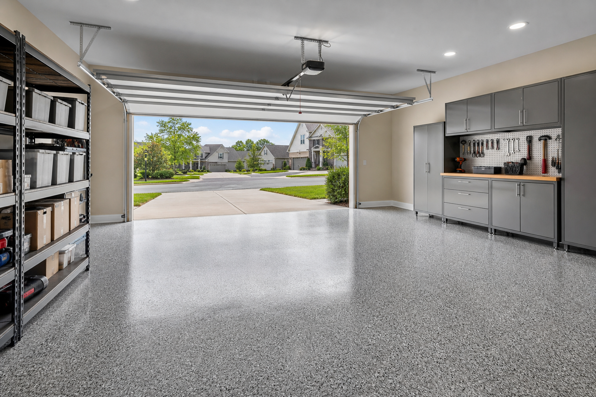

High-Gloss Garage Floor Coatings: Benefits & Tradeoffs
High-gloss garage floor coatings are popular in photos because reflectivity makes the space feel brighter and more “finished.” In real life, gloss is a design choice with tradeoffs: visibility of dust, sensitivity to scratches in some cases, and how the floor behaves when wet. Compare sheen and additive options with garage floor coating pros before you lock a system.
Why glossy garage floors photograph well
Gloss increases specular reflection, which can make overhead lights and daylight feel more impactful. That is especially helpful in garages with limited natural light.
Photography also hides micro-scratches that you will notice at grazing angles in real life—set expectations before you fall in love with a single hero image.
Brightness, lighting, and perceived cleanliness
If your goal is a workshop vibe with crisp visibility, gloss can help—especially when paired with bright, even lighting. If you prefer a softer look, satin or matte systems may feel more relaxed.
LED upgrades and lighter wall paint are cheaper ways to brighten a garage than chasing extreme gloss if maintenance anxiety is high.
Tradeoffs homeowners notice after install
- Dust visibility can increase compared with lower-sheen finishes.
- Spot cleaning may become part of your routine if you want the showroom look year-round.
- Expectations should match reality: garages are working spaces, not museums.
Tire marks and leaf debris can read “dirty” faster on reflective floors. Some families love the incentive to keep the space tidy; others resent the upkeep.
Texture and slip: what to ask your installer
Discuss additive texture, topcoat selection, and how the system is tested for your conditions with a local concrete coating company. Snow melt, rainwater, and yard debris change what “safe enough” means for your household.
If elderly parents or kids run through the space in socks, say so. Texture can be increased within reason, but every choice trades off ease of mopping.
Care tips that keep gloss looking premium
Promptly clean automotive fluids, use manufacturer-approved cleaners, and avoid dragging sharp metal edges across the surface. Entry mats can reduce tracked-in abrasion.
Soft-bristle brooms and microfiber mops tend to be kinder than aggressive squeegees with embedded grit. When in doubt, ask the team that installed your system.
Pairing gloss with lighting and cabinet colors
High-gloss floors bounce under-cabinet shadows and overhead hot spots. If you are installing white storage systems, glare can double—plan fixture placement and shielding.
Neutral gray flake is forgiving; high-contrast flake can look busier in reflection. Bring samples next to cabinet doors before you commit.
Climate, footwear, and tracked-in grit
Road sand and winter boots act like sandpaper. A grate or rug at the man door helps more than most people expect, especially in the first year when you are still babying the finish.
In wet climates, drying bikes and gear elsewhere reduces puddles that pick up dirt and etch the shine.
When to skip max gloss
Consider dialing back sheen if you run heavy rolling tools daily, train dogs in the garage, or simply hate seeing dust. A satin topcoat can still look upscale with half the spotlight effect.
Your floor coating pro can show side-by-side mock-ups when available—seeing beats imagining.
FAQ
Does a glossy garage floor show dust more?
Often yes—higher reflectivity can make fine debris more noticeable.
Can gloss affect slipperiness?
Sheen is only one factor; texture and contaminants matter. Plan with your floor coating installer.
Can you wax or polish a coated garage floor?
Often no—many systems prohibit waxes that interfere with recoat chemistry. Follow manufacturer guidance instead of car-detailing instincts.
Does gloss yellow in the sun?
UV stability depends on the system, color, and whether bays are open or closed. Ask about expectations for your orientation before you sign.